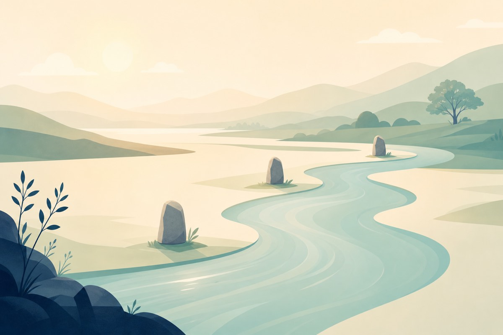

為什麼現在一定要學？
為什麼你們學的不一樣？
在我們開始談「怎麼用 AI Agent」之前——
請先讓我跟你說一件事、為什麼是現在、為什麼是你們。
這份暖身大概 7 分鐘讀完。不是教材、是寫給你們的信。
為什麼是你 — 致這 6 位標記已讀
各位，
為什麼是你們 6 位坐在這間教室、不是全公司一起上？
因為我希望你們不是「被分配來上課的員工」、 而是「工具的創造者與監督者」。
是定義工具該長什麼樣
知道他們真的卡在哪
靠你們把這套帶下去
說實話、你們已經是這間公司目前最會用 AI 的幾位，其他人還茫然摸索中
但我選你們、不只是因為你們現在最會用 AI。
是因為——我重視你們、信任你們。
你們的人格特質、做事方式、以及在你們身上看到的可能性的——
是我打從心裡相信「會讓淨淨持續變更好」的核心關鍵人物。
——淨淨團隊的核心幹部。
這份信任不是 AI 教得出來的、
是過去這段時間的觀察與事件的反應而來
AI 工具一週可以教會、而能力＆人格，卻無法複製。
你們的後者已經讓我看到了、所以我想把前者交給你們。
讓你們的能力、插上新科技的翅膀
說清楚分工——
主框架（軍團系統、Skill、Memory、淨淨總站）我來、
每個部門需要什麼、你們最清楚、自己動手做、最快也最對。
等你們把這套吃進去、再回去帶你們的夥伴、
整個淨淨就會變成一個會學習的全智能AI組織。
這不是一堂課、是一場交棒。
接下來這 8 章、是我給你們的工具書。
慢慢看、不用急。
更是我們要「在苗栗跟世界打仗」的關鍵能力
接下來這 8 章、是我給你們的工具書。
慢慢看、不用急。
市場正在重組，但很多人還沒啟動標記已讀
過去，品牌強大有很多要素——誰團隊多、通路多、口袋深、廣告大、誰就贏。
所以大品牌一年砸幾億、中小品牌靠殘羹剩飯，這個遊戲、我們不是玩家、是觀眾。
但這 2 年、有一件事悄悄變了。
這對誰最有利？對中小品牌最有利。
因為大公司 船太大、轉不動。
他們有 50 層審批、3 個法務、5 個顧問、流程要走 3 個月。
AI 工具進到他們公司、會被改造成「跟以前一樣慢、只是換個介面」。
我們不一樣。我們轉身只要 3 天。
想到一個工具、3 天能 demo、1 週能上線、1 個月能優化 10 次。
這個窗口、不會永遠開著。
跟短影音一樣，大概 6-12 個月、大公司、整個市場就會追上來。
但這 12 個月、是我們彎道超車、跟上主流，累積籌碼的大好機會。
AI 這 3 年，比想像的更快標記已讀
很多人以為 AI 是 ChatGPT 出來才有的——其實不是。
ChatGPT 只是「終於做出一個人類覺得好用的版本」。

大家驚呼「天啊好厲害」、一個月後就忘了它。
從「會說」、進化到「會做」。
你看出差別了嗎——
過去 2 年我們玩的「對 AI 下指令、它回答你」、本質還是「人類在做事、AI 在輔助」。
Agent 不一樣。Agent 是「AI 在做事、人類在驗收」。
你是雇用了一個會自己工作的神隊友。
這個轉變、改變的不是「工具」、是「組織該長什麼樣、流程該如何重組」。
這就是為什麼這堂課的對象是主管、不是執行人員。
淨淨自己怎麼走到今天標記已讀
這套體系不是規劃出來的、是踩出來的。
但每次開新對話都要重新介紹自己、像得了健忘症的助理。
那時候我才知道、原來 AI 可以變成「同事」。
從「一個 AI」變成「一支隊伍」。、2周內完成 10個跨產業品牌行銷站、多種複雜工具
現在輪到你們、把這套帶到部門、讓夥伴也能用。
不是因為我厲害、是因為我每天都在試錯、然後把對的東西記下來。
你們等下要學的、不是抽象的 AI 知識。
是我這 19 天踩過的路、整理成 8 章。（請勿外傳，真的很機密的血淚經驗）
你的角色、悄悄變了三件事標記已讀
在 Agent 時代、你還是主管、但你管的東西變了。
變化一：從「員工執行者 or 管理者」到「決策者、工具創造者、橋樑」
夥伴管理者
以前要執行、分配工作、追進度、考核 KPI。
夥伴是執行者、你是分派者。
橋樑
一邊帶夥伴用工具、一邊把夥伴的需求反饋回來、改工具。你是連接兩端、讓完成度更好的人
變化二：從「執行者」到「使用者代表」
執行者
你做完老闆交代的事、就完成任務。
使用者代表
你代表前線講話、讓工具被改成夥伴真的好用
並能真的讓AI賦能團隊、公司
變化三：從「累積經驗」到「累積 Memory」
經驗在腦子裡
你做了 5 年、學會的 know-how 留在你身上。離職就帶走。
經驗在 Memory 裡
你做的決策、踩過的坑、找到的解法、都存進 AI 的長期記憶。下一個夥伴接手、不用重學一次。
變化四：從「使用工具」到「打造部門工具」
等工具來
需要什麼系統、提需求給 IT、找廠商
半年後才有、還不一定符合你想要的。
自己動手做
部門需要什麼儀表板、內部協作工具——你直接用 AI Agent 自己打一個出來。3 天能 demo、1 週能上線。主框架我來、部門小工具你們來。
你們負責部門工具——智能助手、儀表板、內部協作、流程優化。
不是把所有事都丟給工程部，是你們自己變成「會建工具的主管」
這四件事看起來很抽象、其實對你日常的影響很實在——
你會發現、你的角色從「把事做完」變成「把系統建起來」。
做完一次的事就過了、但建好的系統、會永遠運作。
2026、是淨淨的
系統打底年標記已讀
這幾年、淨淨從一個小品牌做到 終於在台灣市場有了「一席之地」
靠的是「最棒的產品、數位行銷的加速」——接上每一次的紅利、迎風而上
但下個階段、靠努力、好產品是上不去的。
接下來要靠「智能系統的架構＆落地」。
不是業績年、是把基礎建好的一年
所以今年我把資源都壓在這幾件事——
三件主框架（我來做）
① 淨淨總站——把所有夥伴的工作流接起來、不再 200 個 Notion 頁四散
② AI 系統——Agent + Memory、Claude官方架構、Harness、資安、網站架設、行銷文案Skill等
③ 主管賦能——你們這 6 位、變成「工具建造者」&「迭代負責人」
部門AI工具（你們來做）
每位主管針對自己部門、視需求動手做——
可能是銷售儀表板、話術小幫手、進度追蹤板、內部 FAQ 工具、會議記錄生成、人資考核系統……
不需要驚天動地、能讓你們部門夥伴，提高效率、減少錯誤、好分析好追蹤就是好工具
三層各司其職、淨淨整套體系才會活起來。
你會發現、第③件主框架（主管賦能）跟你們要做的部門工具是同一件事——
你們不是來學 AI 的、你們是來幫我把這套變成 6 個人都能跑、不只我一個人能跑的關鍵。
第三件做完、明年我們才有條件談業績——
因為基礎結實了、團隊智能化、才能在苗栗跟世界打仗
我們在種一棵樹苗
3 年後、會長成淨淨自己的樹林標記已讀
我想讓你們知道——我們現在做的這些事、不是為了「跟流行、會用 AI」這個技能而已
是為了種下一棵樹苗、未來 3 年慢慢養大、變成淨淨自己的一片樹林。
你今天記下一條 [卡] [想要]——是在施肥。
你今天打造一個部門小儀表板——是在種一棵新苗。
3 個月後——樹苗活下來了。
半年後——根開始扎深。
1 年後——枝葉開展。
3 年後——你回頭看、整片山都綠了。
那片樹林長什麼樣 · 6 個畫面
這不是想像、是我們已經在動工的樣子。閉上眼睛、想像 1 年後的淨淨——
每個夥伴一上工
都有專屬 AI 助理
早上打開電腦、AI 已經把昨天做完的事整理成日記、提醒今天 3 件事、上次踩過的坑也標好了。沒有「冷啟動」這種事。
每個部門有
自己的AI工具箱
財務有妮妮儀表板、行銷有廣告 KPI 站、客服有話術 AI、設計有 IG 排程器——每個都是該部門主管親自打造、最懂自己部門的人最懂的工具。
新人 1 週上手專案
不需要 1 個月+
第一天讀 Memory、第三天能寫像樣工作日誌、第七天能單獨跑專案。SOP 不在腦子裡、在系統裡。
公司＆團隊有
完整的「集體記憶」
每個決策、每次踩坑、每個解法都在 AI 裡。離職帶不走、新人秒接上。淨淨不再是「靠某幾個強人撐」、是「系統自己會跑」。
主管的時間從
「救火、追蹤」變「審核、迭代」
每天的瑣事 AI 接走 70%、你終於有空想下一季、想新工具、想新打法。你的時間從處理問題、變成創造機會、遙望下一站
競品還在開會
我們已經做完3輪迭代
別人用 1 個月做的事、我們 3 天做完。機動力的差距、會越拉越大。
這不是更快、是要跨次元的速度。
時間軸 · 從種苗到樹林
Memory 累積到一定厚度、AI 開始「真的懂」我們。能穩定輸出、滿足現有需求
是「精實團隊操盤、AI智能賦能的公司」。沒有人能複製、因為這是我們一棵一棵種出來的。
不必趕路
但這扇門不會永遠開著標記已讀
講完樹林的樣子、最後想跟你們聊節奏＆心態
我不喜歡「彎道超車」這種詞、太用力。
能讓我們前進的、不是急、是每天慢慢累積。
— 第一圈最累、第十圈很順、第一百圈停不下來
但有一件事是真的——這扇門有時間限制。
18-24 個月後、AI 工具會普及到所有公司、那時候大家又站在同一條線。
那時候比的、又會回到「誰口袋深」。
所以這 18 個月、是我們唯一一次把樹苗養成中型樹的窗口。
不需要拼命衝、需要的是不要停。
不必趕路、但不能停下來。
讀完了。
如果你看到這裡、你已經知道為什麼是現在、為什麼是你。
接下來這 8 章、是工具書、慢慢看、用得上的時候自然就懂了。